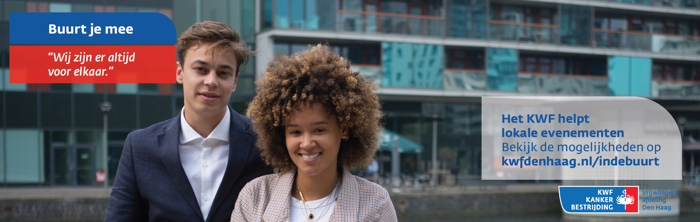
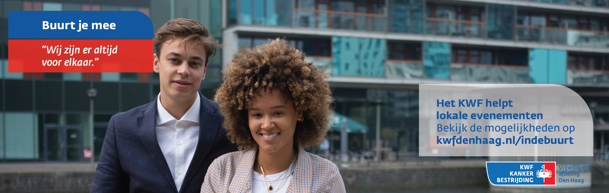

Buurt je mee
Concept
Het concept die we hebben bedacht is dat er een buurtfeest of evenement georganiseerd kan worden door de mensen zelf die in de buurt wonen met hulp van het KWF zelf. Ze worden op de hoogte gebracht van dat dit kan door de flyers en promotie op onder andere Instagram. Het KWF contacteert dan mensen die in aanraking zijn gekomen met kanker die onder andere hun verhaal willen delen op dit evenement. Dit hoeft niet gedaan te worden op een podium, maar gewoon tussen de mensen. Op deze wijze zullen mensen indirect geworven worden om vrijwilliger te worden.
Mijn bijdrage
Mijn verantwoordelijkheden was het maken van de flyers, banners en Instagram posts. Ik heb deze materialen gemaakt in Adobe Illustrator. Daarnaast had ik toegang tot de bestanden van het KWF zelf en heb dan ook gebruik gemaakt van hun eigen font. Hieronder kan je alle visuals vinden die ik heb gemaakt. De foto's die ervoor zijn gebruikt, zijn gemaakt door Charissa Meulens.
 
